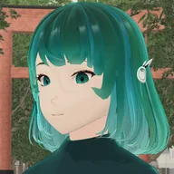

3D を使わずに、景をえらんで札をひらけます。
床を押す＝そこへ歩く ／ 作品を押す＝前まで行って碧が話す（もう一度で札） ／ ドラッグ＝見回す ／ 地図＝部屋へ移る ／ キーボード＝W A S D・矢印で歩く、Q E で向きを変える、スペースで碧の話を止める・続ける、N で次へ、M で地図、Esc で閉じる。
© 2026 mitsulab. All rights reserved. この作品の文章・画像・音声・3D・プログラムの著作権は、別に示した他者の素材を除き mitsulab にあります。無断の複製・転載・改変と、AI の学習・生成への利用はお断りします（テキスト・データマイニングの権利を留保します）。利用規約
© 2026 mitsulab. All rights reserved. Copyright in the text, images, audio, 3D and software of this work belongs to mitsulab, except third-party materials credited separately. Copying, reposting or modifying them without permission, and using them for AI training or generation, are not permitted. Text and data mining rights are reserved. Terms
この博物館は JavaScript で動きます。